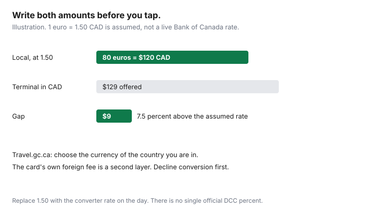

Travel · Canada
Always Choose Local Currency: How Canadians Avoid Dynamic Currency Conversion Traps
The terminal turns toward you and asks a helpful question: Canadian dollars, or the local currency? The CAD choice feels safer. It is usually the expensive one. Global Affairs Canada’s travelling-and-money page tells Canadians to choose the currency of the country they are in. If the merchant or the ATM converts the charge into Canadian currency, you pay high conversion rates and transaction fees.
The household rule is one sentence, taught before you fly. Numbers below that show a markup are an illustration with a stated assumed exchange rate, not today’s euro rate and not a statutory fee. The card’s own foreign-transaction fee is a second layer, worked in the FX guide. This page does not rank cards.
Disclosure: Multi-currency accounts and cards with no foreign-transaction fee are an offer type. Saving Optimizer may earn a commission if we later add partner links. We do not claim a bank, card-network, or money-transfer partnership, and we do not rank cards. The Government of Canada wording was read 24 Sep 2026. Education only.
Key takeaways
- Dynamic currency conversion is the offer to pay in CAD while you are spending another currency. Decline it.
- The script is “local currency, please,” said before the tap. If the screen already shows CAD, cancel and rerun.
- Hotel and car-rental websites often default to CAD. Switch the selector. A Canadian merchant that can only bill CAD is a different product. Still compare the rate.
- Estimate the markup from the two numbers on the spot. There is no single official DCC percent to memorize.
- Paying CAD is acceptable only when you have done that math on a small amount. Teach every adult, including a teen with a card, the same rule before departure.
What DCC is and why terminals push CAD abroad
Dynamic currency conversion means the merchant, the payment terminal’s provider, or the ATM operator converts your purchase into Canadian dollars at a rate they set, and your statement shows CAD. The alternative is to let the charge go through in pesos, euros, US dollars, or whatever the country uses, and let your card network or your multi-currency account convert it. Travel.gc.ca’s instruction, on the travelling-and-money page, is direct: always choose the currency of the country you are in.
Terminals push CAD because the markup is revenue. The button is often labelled as a guaranteed rate or as a courtesy to home. The courtesy is the product. Your card may still add a foreign-transaction fee on some conversions, which is why households sometimes think the CAD button “avoids the fee.” It replaces a disclosed card fee with someone else’s rate, and on some statements you can pay both a poor rate and a fee. Read the posting. Do not assume the CAD button turned the purchase into a domestic one.
The FX guide uses a 2.5 percent issuer illustration, about $50 on $2,000 of spend, and a mid-market conversion fee near 0.48 percent as a low-end example that is not fixed for every currency. Those figures are the card layer. DCC sits on top of the decision, before the card layer runs. Decline DCC first. Then make sure the card you handed over is one whose conversion fee you have actually read.
Chip/PIN and restaurant scripts: “local currency please”
Chip and PIN terminals, and tap terminals, show the choice on a small screen that the server may click for you if you hesitate. Take the screen. Say the sentence before they start: “Local currency, please.” If you are speaking French or Spanish that day, use the same idea in a short phrase you practised. The English sentence is enough in most tourist terminals. Point at the local-currency amount if the labels are unclear.
Restaurant script, in order:
- You say “local currency, please” when the terminal arrives, not after you have tapped.
- You look at the currency code on the screen. CAD, C$, or a maple-leaf prompt is the wrong one.
- If it is wrong, you ask them to cancel and run it again. A voided slip is cheaper than a markup on the whole table.
- You check the printed receipt before anyone leaves. The total should be in the local currency.
ATMs use the same trick, often with a worse screen. Choose withdrawal in the local currency. The FX guide covers how much to take and the ATM fee table. DCC does not become wise because you needed cash. Airport exchange desks, which travel.gc.ca flags as expensive even when they advertise no commission, are a different bad option. They are not a reason to press CAD on the ATM.
Online hotel and car-rental checkouts that default to CAD
Online checkouts guess that a Canadian billing address wants CAD. Hotel sites, car-rental sites, and some airline extras will show a Canadian-dollar total that is their conversion, not your card’s. Before you pay, open the currency selector and choose the currency of the country where the room or the car is. Screenshot the local-currency total. If the site will not switch, you are probably buying from a Canadian merchant of record that invoices in CAD. That is not the same mechanism as a restaurant terminal, and it is still a rate you should test.
Test: note the local price if the site shows one, convert it with the Bank of Canada’s currency converter for that day, and compare with the CAD checkout. A gap of a few percent is the markup you are about to accept. A Canadian online travel agency that only bills CAD can be a fair way to pay if the all-in price, after that test, beats booking on the foreign site in local currency. “Fair” is the result of the test. It is not the default. The direct-versus-portal guide is the loyalty half of the hotel decision. Currency is this half. Do both.
Car rentals add a second trap. The estimated total in CAD at checkout can hide a later authorization in local currency, or the reverse. Read the currency on the rental agreement at the desk. Say the sentence again. A desk agent who says “we have to charge CAD” is asking you to accept DCC. Ask for the local-currency total in writing. If the company truly cannot charge local currency, you are in the rare case in the section below, and you should know the gap before you sign.
Estimate the markup you just avoided
You do not need the terminal’s percent. You need two amounts.
| Step | Amount |
|---|---|
| Dinner, local currency | €80 |
| CAD at the assumed rate of 1.50 | $120 |
| CAD the terminal offers | $129 |
| Gap | $9, which is 7.5 percent above the assumed rate |

On a $2,000 trip, a 7.5 percent DCC gap is $150 before any card fee. Your gap will not be 7.5 percent. Write the one you were just offered, on the receipt, so the next adult in the group can see why the rule exists. If your card then adds a foreign-transaction fee because the charge was still treated as foreign, that fee belongs in the FX guide’s layer. If the CAD button truly posted as a domestic purchase, you have paid the terminal’s rate instead. Either way you needed the two numbers.
When paying CAD might still be acceptable (rare)
Paying in CAD is a conscious exception. Use it only when one of these is true:
- You compared the amounts and the CAD offer is within about 1 percent of the card’s expected CAD on a small purchase, and fixing the terminal would cost the table more time than the dollars. Say the exception out loud so it does not become the new habit.
- The terminal or the desk cannot complete the sale in local currency, the amount is small, and you accept the gap knowingly. A coffee can qualify. A hotel folio does not.
- A Canadian company is the merchant and CAD is the only invoice. You already ran the Bank of Canada comparison. You are not “choosing DCC.” You are paying a Canadian bill whose rate you checked.
A workplace expense policy that “needs CAD” is not an exception by itself. Most employers accept a local-currency receipt plus the card statement. Ask before the trip. Do not donate 7 percent to a terminal so the spreadsheet has one currency.
Teach every adult on the trip the same rule before departure
The person who pays the dinner is the person who must say the sentence. In a couple, that is often not the person who read this page. In a family, a teenager with a supplementary card or a prepaid balance will meet the same screen and will press the flag that looks like home.
Before departure, take ten minutes. Everyone who might pay repeats “local currency, please.” You show a photo of a CAD prompt and a local-currency prompt. You put a line in the wallet or on the phone lock screen: “Not CAD.” You agree that cancelling an awkward transaction is success, not rudeness. You name the backup adult if the first adult freezes. Then you stop. A rule that needs a seminar will not survive a noisy restaurant. A rule that is one sentence will.
Sources & date stamps
- Travel.gc.ca, travelling and money — “Always choose to be charged in the currency of the country you are in. You will pay high conversion rates and transaction fees if they convert to Canadian currency.” Airport and hotel exchange desks can be expensive even when they advertise no commission. Read 24 Sep 2026.
- Bank of Canada currency converter — the tool for the comparison on the day you pay. This page’s 1 euro = 1.50 CAD figure is an illustration, not a posted rate.
- Card foreign-transaction illustrations — the FX guide, including a 2.5 percent example and Wise Canada’s ATM table from 1 May 2026. DCC is a separate decision from that table.
Frequently asked questions
What is dynamic currency conversion?
A shop, restaurant, hotel, car-rental desk, or ATM offers to charge you in Canadian dollars instead of the local currency. Travel.gc.ca says to always choose the currency of the country you are in. If they convert to Canadian currency, you pay high conversion rates and transaction fees.
What do we say at the terminal?
Before anyone taps or enters a PIN: charge in local currency, please. If the screen shows CAD, ask them to cancel the transaction and run it again in the local currency. The same sentence works at a restaurant and at an ATM.
Do online hotel and car-rental sites do this too?
Often the currency selector defaults to CAD because the site sees a Canadian address or connection. Switch to the local currency before you pay, and save the local-currency total. A Canadian travel agency that bills you in CAD as the merchant is a different case. Read their rate against the Bank of Canada converter. It can still be a markup, and it is not the same button as a foreign terminal.
How much does the CAD button cost?
There is no single legal markup. On the receipt, compare the terminal’s CAD price with the CAD amount your card or the Bank of Canada converter implies for that local price. In the illustration on this page, an assumed rate of 1 euro equals 1.50 CAD makes an 80 euro dinner 120 CAD, and a terminal price of 129 CAD is 9 dollars, or 7.5 percent, above that assumption. Use your own rate on the day.
When is paying in CAD acceptable?
Rarely. You did the math and the CAD offer is within about 1 percent of the card’s expected amount on a small purchase, or the terminal cannot complete in local currency and the amount is small enough that you accept it out loud. Do not accept it as the default on a hotel folio or a car rental.